Leadership
Student Leaders

President
I’m Melissa Wong, and I’ll be leading Tau Beta Pi’s Colorado Beta chapter this year! As a senior with a dual major in Biomedical Engineering and Computational Linguistics, I’m interested in building bridges between traditionally separate disciplines. I seek to be an advocate for medical equity, mobilizing a better healthcare system through multidisciplinary research and people-driven solutions. This has led me down a variety of paths, from startups and venture capital to performing kidney transplants and teaching blind athletes how to ski.
Having lived in Shanghai, California, and Colorado, I am continually appreciative of cross-cultural connections and novel experiences. True to my Colorado roots though, I’m an adrenaline-junkie, skier, climber, and pickleball enthusiast. On the other half, I’m a concert-goer, fashion buff, and a lover of all things life!

Hyma Jujjuru
Vice President
I’m Hyma Jujjuru, Tau Beta Pi’s Vice President (previously Director of Professional Relations and Corresponding Secretary) and a Computer Science major. I am passionate about helping improve people's lives through the innovation of technology, specifically through machine learning. In addition to Tau Beta Pi, I am a board member of Engineering Excellence Fund (EEF) and Logistics Director of HackCU. My research involves the study of privacy control when interacting with physical (robots) or virtual agents. I was a Software Engineering Intern at Spectrum for 10 weeks this summer. Previously, I did a 3 week internship at Google Cloud in Boulder the summer of 2025.
Outside of academics, I am a Resident Advisor at Williams Village North and love to make people feel welcomed into the community. I love to travel to new places and try new cuisines. I am always open to new experiences and adventures.
This is my third year with Tau Beta Pi and I am very excited to meet you all!!
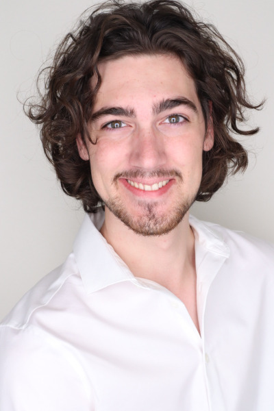
Daniel Gruenbauer
Treasurer
Hello, my name is Daniel and I am serving as the Treasurer for Tau Beta Pi’s Colorado Beta Chapter for the ‘26-’27 school year. I am a senior in Aerospace Engineering with a minor in Engineering Management. Outside of school and Tau Beta Pi, I love to bike, hike, camp, and challenge myself with competitive tabletop games. I am so excited to start my third year in Tau Beta Pi surrounded by amazing engineers!
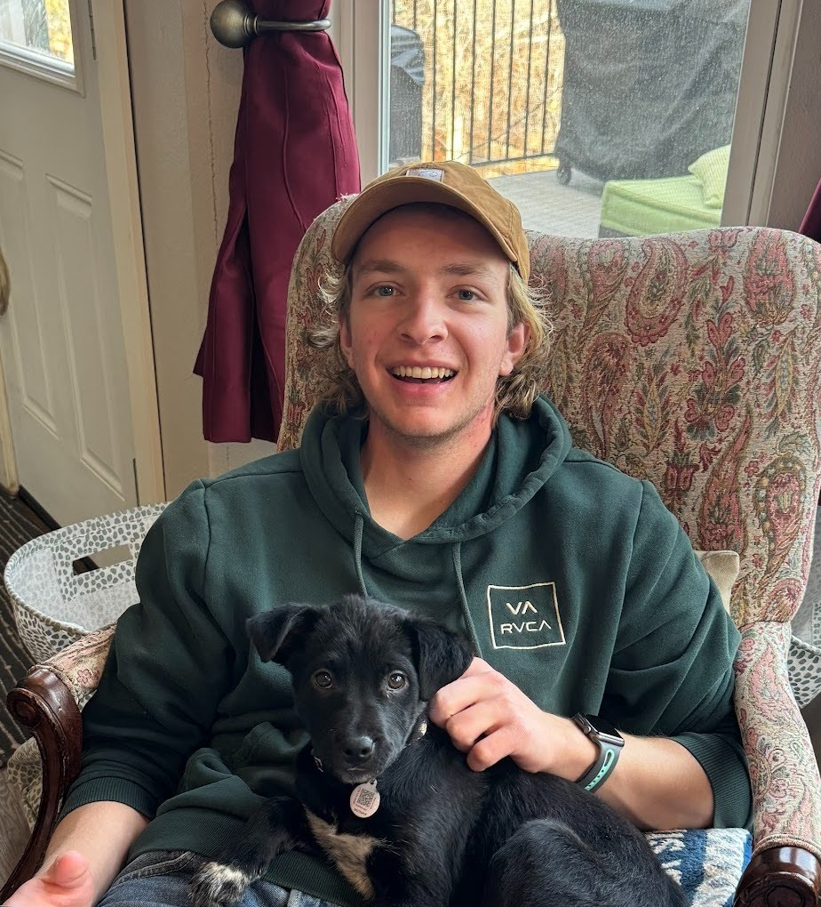
Jacob Browning
Recording Secretary
My name is Jake Browning, and I am the recording secretary for Tau Beta Pi this year! I am a junior studying Chemical Engineering with a minor in engineering management. I’m excited to keep the forward momentum of TBP and grow the organization this year! I am currently an intern at PAGE Technologies and love to research and get hands-on experience in my field. I can’t wait to meet everyone this year and will do my best to make it special.
Being a Colorado native, I love anything outdoors. From rock climbing to hiking, you can find me spending my free time outside. I also love hanging out with friends and really going with the flow!
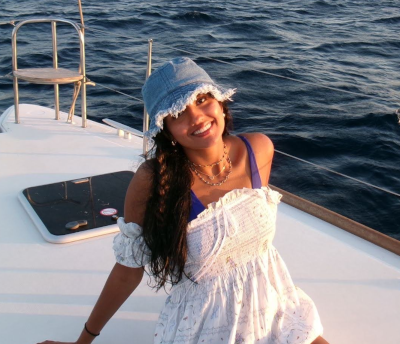
Aarushi Singh
Corresponding Secretary
My name is Rushi Singh, and I am the Corresponding Secretary for this year! I am from New Jersey, and I am majoring in Aerospace Engineering. Outside of class, I am a member of Sigma Gamma Tau, South Asian Student Association, and Tea Club. Besides engineering, I like to DJ, workout at the Rec, and hike!
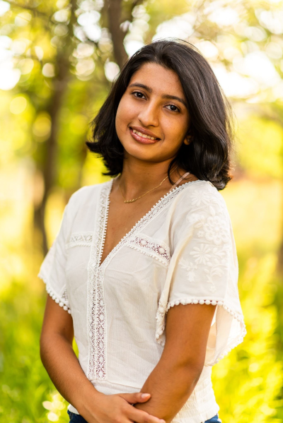
Aishani Dutta
Events Coordinator
Hi! My name is Aishani Dutta, and I am serving as the Events Coordinator this year. I am currently a senior majoring in Electrical Engineering & Applied Math with a strong interest in radio frequency (RF) engineering. Alongside my coursework, I am involved in undergraduate research and continuing work at my summer internship. In my free time you can find me cooking, playing the piano, reading, hiking, and spending time with friends & family. This is my third year in Tau Beta Pi and I’m excited to meet you all!
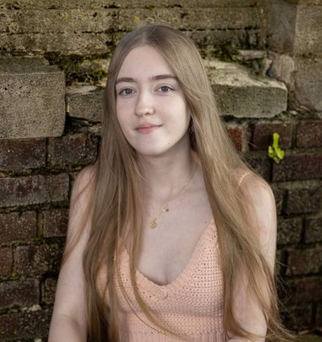
Natalie Campagna
Educational Outreach
Hi everyone! My name is Natalie Campagna and I’m an Education Outreach Director for TBP this semester. I’m currently a junior in Aerospace Engineering, interested in flight control and astrodynamics. Within the aerospace department I TA/TF for ASEN 1403 Introduction to Rocket Engineering and ASEN 2403 Dynamics. I’m also a NASA Pathways Intern at the Johnson Space Center training in various flight control disciplines.
Outside of engineering, I love learning languages (currently fluent in Italian and Spanish, working on French!), baking, crocheting, and hanging out with my cat. Super excited to meet everyone and host some fun events this semester!
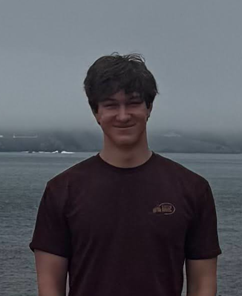
Christopher Krueger
Educational Outreach
My name is Christopher Krueger, and I am an Educational Outreach Director for Tau Beta Pi this year! I’m currently a Junior double majoring in Aerospace Engineering and Engineering Physics, minoring in Engineering Management and Astrophysics. I have interests in instruments, ion propulsion, quantum sensors, and particle physics, and I am an undergraduate astrophysics researcher at JILA.
In my free time I like cooking, playing trumpet, hiking, going to the Rec, and being with my friends. Excited to be in my 2nd year in Tau Beta Pi, and contribute to this organization!
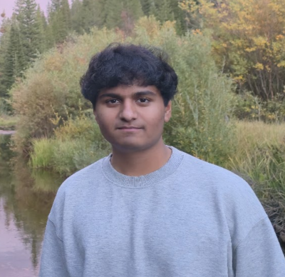
Jay Yeluri
Professional Relations
Hey everyone! My name is Jay Yeluri and I am from New Jersey!
I’m excited to be serving as one of this year’s Professional Relation Directors. I am a Junior in Aerospace Engineering, minoring in Computer Science and Applied Mathematics, and part of the Design Build Fly club. I’m interested in aerodynamics, propulsion, and dynamics!
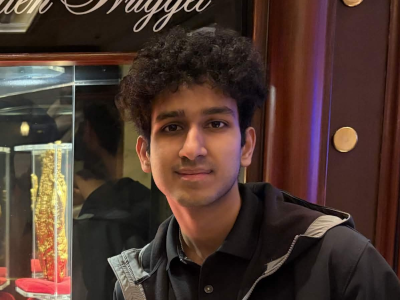
Vasista Ramachandruni
Professional Relations
Hi, I’m Vasista and I am from the San Francisco Bay Area in California. I’m excited to serve as the Professional Relations Director for the 2026-27 academic year. I am a sophomore in Aerospace Engineering Sciences and Computer Science and am interested in GNC, autonomy, and robotics.
In my free time I play basketball, trade stocks, and watch movies (Hollywood and South Indian).
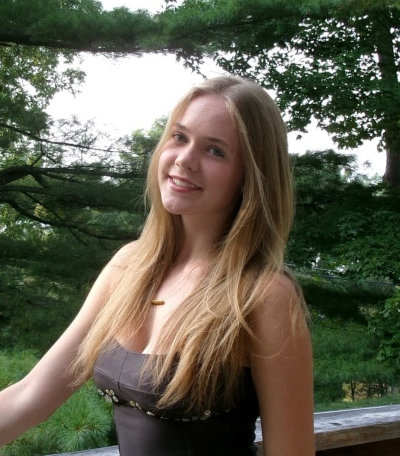
Amelia Menefee
Volunteering Events Director
Hi! My name is Amelia Menefee. I am the Volunteering Events Director this semester! I am a sophomore studying Aerospace Engineering and minoring in Engineering Management and Atmospheric and Oceanic Science. Outside of class I am a member of Society of Women in Engineering and the SWARM-EX Cube Satellite team.
I am from Maryland and love quality family time on the lake! When I am not doing academic work you can find me running, hiking, or at a concert. I also love travelling and exploring new study/coffee spots around Boulder.
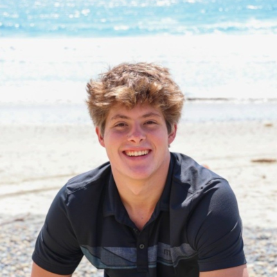
Tyler Patay
Social Events Director
Hey everyone! My name is Tyler Patay, and I’m a biomedical engineering junior on the pre-med track. I’m passionate about medical imaging, quantitative analysis, and clinically focused research. On campus, I compete with the CU club water polo team and serve on the CU Sports Club Council. I’m excited to help students connect through fun events with TBP this semester.
Outside of academics, I enjoy swimming, spending time outdoors, and hosting competitive game nights with friends. I also coach at a local water polo club. I’m looking forward to meeting everyone this semester!
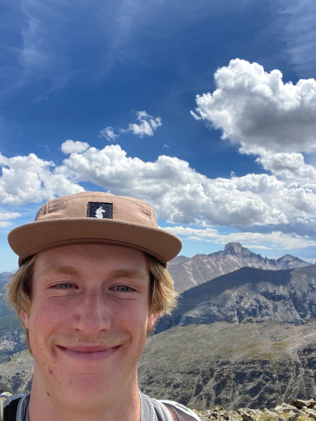
Trevor Chaplin
Fundraising
Hi, my name is Trevor Chaplin and I am the fundraising director this year. I am a sophomore in Civil Engineering with a Spanish minor. In the future I would like to live and work in central America improving vital infrastructure and providing housing for impoverished communities.
I love to learn knew things and I have all sorts of little interests that occupy my free time. I enjoy anything to do with the mountains, playing music, and skateboarding. I don’t love, planning ahead, being productive, or being on time.
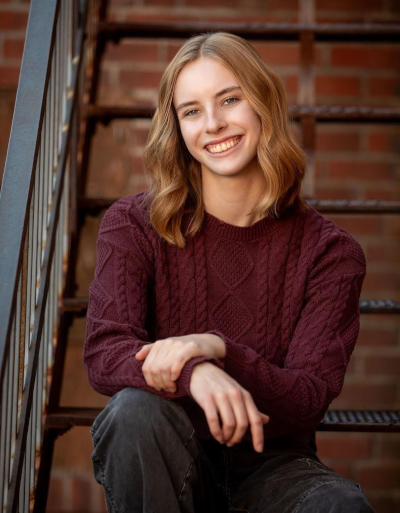
Renee Easterbrook
Membership
My name is Renee Easterbrook, and I’m the Membership Director for Tau Beta Pi this semester. I am a sophomore majoring in Mechanical Engineering with a minor in French. I am interested in sustainability and robotics, and I am looking forward to exploring those passions and helping others develop theirs through TBP this semester.
Outside of engineering, I have an extensive list of hobbies, including climbing, snowboarding, baking, reading, and hiking. I am looking forward to a great semester!
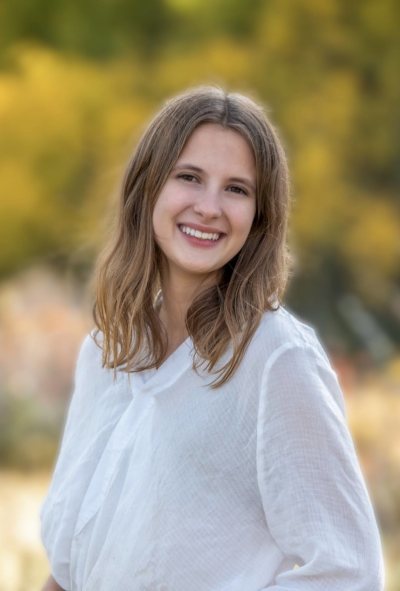
Mackenzie Weber
Graduate Relations
Hi! I’m Mackenzie, and I’m the Graduate Relations Co-Director this year! I am a senior majoring in Biomedical Engineering and minoring in Applied Math and Business. Outside of classes, I am an undergraduate research assistant in a bioastronautics lab on campus, where we study spatial disorientation and motion sickness.
I have lived in Colorado my entire life, which has given me a deep love for hiking, skiing, and camping. I also love to ride horses, travel, and spend time with friends and family.
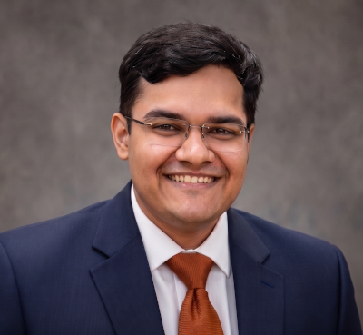
Nikhil Sachidanandan
Graduate Relations
I’m Nikhil Sachidanandan, and I’m excited to serve as your Director of Graduate Relations & Mentorship this year! I’m currently completing my master’s in Mechanical Engineering at CU Boulder, focusing on thermal and aerosol science. My work centers on indoor air quality—essentially, finding ways to make the air we breathe inside healthier and safer. I’ve always believed that engineering is at its best when it directly serves people, a mindset that has driven my journey from building experimental ventilation setups at IIT Bombay to publishing research on safer airflow configurations.
Alongside my research and leadership roles, I’m also an Associate Member of the Sigma Xi Scientific Research Honor Society, where I stay actively engaged with the broader scientific community.
Moving from the vibrant energy of Mumbai to the mountains of Boulder gave me a deep appreciation for navigating big life transitions, which is why I’m so passionate about guiding peers through their own academic and research paths. When I'm not in the Vance Lab or helping out at the Mechanical Engineering Front Desk, I stay grounded by hitting the gym, hiking, or indulging my love for classic motorcycles. I’m really looking forward to connecting our undergraduate and graduate communities and helping everyone find their footing this year!
Advisors

Sandy Pitzak
Chief Advisor
I am an aerospace engineer who has done design, analysis, and operations of civil & commercial, manned & unmanned spacecraft for various companies before starting my own independent subcontracting business. My experience includes space situational awareness, orbital mechanics, systems engineering, electrical power systems, and environmental control & life support systems. Currently, I am a Senior Spacecraft Engineer at Atomos Space in Denver, designing space tugboats.
As an undergraduate, I served first as corresponding secretary, then as president of the Colorado Beta chapter. Upon graduation with my BS/MS in aerospace engineering in May 2001, I was elected to the advisory board, and became chief advisor in 2003. Since then, I have helped Colorado Beta host Tau Beta Pi National Conventions in 2006 and 2018. In 2016, I received the national Outstanding Advisor Award from Tau Beta Pi. I am also a director of the Front Range Alumni Chapter, acting as liaison between the alumni and student chapters.
In my spare time, I enjoy reading and watching programs about science, science-fiction, and fantasy. I can often be found riding my bike around Boulder or hiking along the trails. Other hobbies include knitting, sewing, and personal finance. Feel free to contact me with questions about Tau Beta Pi, anything space-related, life after college, etc.

Dr. Torin Clark
Faculty Advisor
I am the faculty advisor for Tau Beta Pi and a former student in Aerospace Engineering and member of TBP. I am an Associate Professor in the Smead Aerospace Engineering Sciences Department and faculty member in the Biomedical Engineering Program and Robotics Program. I am a member of the Bioastronautics Laboratory, where we research the challenges that humans face during space exploration missions. Specifically I focus on astronaut biomedical issues, space human factors, human sensorimotor/vestibular function and adaptation, interaction of human-autonomous and human-robotic systems, mathematical models of spatial orientation perception, and human-in-the-loop experiments.
Outside of TBP, I like to ski, hike mountains, camp, play soccer, and do those things with our two little kids.

Greg Newcomb
District Director & Chapter Advisor
I've worked at CU's Laboratory for Atmospheric and Space Physics (LASP) for nearly a decade as an Embedded Systems Engineer, which means I gets to combine three of my favorite hobbies: software, electronics, and space. My MS is in Electrical Engineering from CU Boulder.
I've acted as an advisor to the CU Boulder chapter since 2007 and before that served as the chapter President. I was appointed a TBP District Director in 2011, a post intended to facilitate communication between collegiate chapters and TBP HQ. My favorite parts of being involved with TBP are the frequent chapter visits, establishing relationships with chapter officers, and seeing officers grow into strong leaders.

Scott Busch
Chapter Advisor
I am an alumni of the Computer Science department of CU Boulder. I graduated from the BS/MS program at the end of 2009. Since graduating, I've has been working for Broadcom Limited (used to be Brocade Communications System) in Broomfield, Colorado. For Broadcom, I am a embedded software and linux kernel module developer working on the firmware running the network switches and routers.
Outside of a work, I dedicate a lot of time to my athletic pursuits as a endurance cyclist participating in many rides in the front range and Colorado mountains. In addition to cycling, I am starting to participate in triathlon racing. In the time remaining, I like reading, learning to play the piano, and getting together with friends.
I been an advisor for the Colorado Beta chapter since 2010. I am a past president of the CO-B chapter and currently is a member of the Front Range TBP Alumni chapter. I greatly enjoyed working with the students to support them for leading the chapter's membership. I enjoy watching the students grow and learn new skills and grow in their experiences.

CJ O'Neil
Student Advisor
I’m a senior in the Aerospace Engineering Bachelors and Accelerated Masters program. I served as the Vice President of the chapter during the ‘24-’25 school year with former president Grace Halbleib. I’ve been a Spacecraft Systems Engineer at the Laboratory for Atmospheric and Space Physics since the end of my freshman year and have been an undergraduate research assistant researching ecological radar applications for the past year.
In my free time, I enjoy climbing, snowboarding, 14ers, and getting outside.